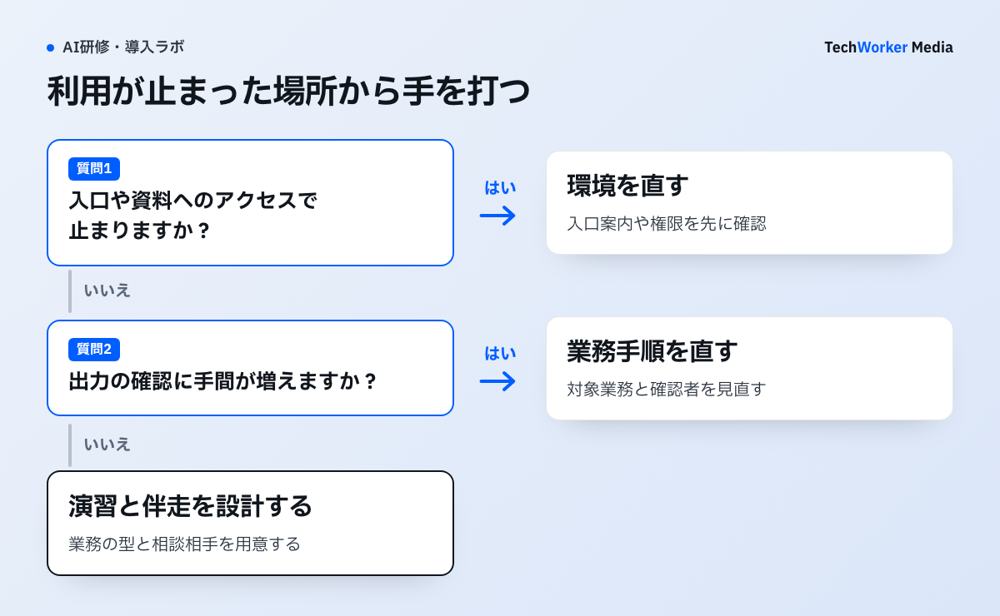

ライセンスは配ったのに、現場で使われているか分からない。そんなときは追加研修を決める前に、利用者数と使われているアプリを確認します。Microsoftの利用レポートでは、この2つを分けて見られます。
Microsoftの利用レポートは配布数と利用数を分ける

公式画面では、利用可能ユーザーとアクティブユーザーが別の棒で示され、Word、Teams、Outlookなどの内訳も確認できます。配布済みかどうかと、業務で使われたかどうかを混ぜないことが最初の読みどころです。
Copilotが定着していない部門を、どう見つけますか？
配布、アクティブ率、利用アプリ、業務成果を段階別に見て、止まっている場所だけを支援します。
月次会議では利用者を一括りにせず、権限、業務題材、管理職の承認、操作習得のどこで止まったかを部門別に一つ選びます。分母はライセンス付与者、比較期間は同じ日数にそろえ、配置転換や休職者を注記します。
定着させるには、どんな手順で進めればよいですか？
原因ごとの打ち手、チャンピオン、プロンプト集、利用率の測定、90日の判定の順で進めます。

低利用の部署には、まず一つの業務で止まった場所を聞きます。入口を見つけられない、資料へアクセスできない、出力確認に手間がかかる、上司の承認がない、のどこかです。原因が決まってから、入口案内、権限修正、演習、手順変更を選びます。
手順1：4つの原因に、打ち手を一対一で対応させます。4点を確認し、止まっている原因に対応する施策から試します。利用できるアプリや参照資料がない場合は、追加研修より先に環境を直します。
- プロンプトが分からない場合は、部門別プロンプト集と、型演習中心の研修を用意します。
- 「手作業の方が速い」場合は、効果が出やすい業務から着手し、最初の2週間で時短を体感させます。
- 推進体制がない場合は、部門ごとの推進者を公式に任命します。
- 測定していない場合は、利用率KPIを設計し、週次でレビューします。
手順2：チャンピオン（推進者）を任命します。設計の要点は3つです。
- 選び方：ITスキルの高さでなく、その部門の業務を理解していて、同僚から相談されやすい人を選びます。業務の翻訳力と社内の信頼は、後から付けられません。
- 役割の明文化：週次でうまい使い方を共有し、プロンプト集を更新し、つまずきを事務局に渡す役割を書き出します。
- 公式化：推進活動の時間を業務時間として認め、評価にも反映します。善意のボランティアに頼ると、その人の異動と同時に止まります。
これはTechWorker独自の型ではありません。Microsoftは社内推進コミュニティ「Copilot Champs Community」を運営しています。公式ブログ（Microsoft Inside Track）で、全社展開の柱にしていると公開しています。Microsoft Learnの公式トレーニング（MS-4007）もあります。ユーザーエネーブルメントの枠組みで、導入計画を作る方法を提供しています。
手順3：部門別プロンプト集を作ります。全社共通のプロンプト集が使われないのは、例が自分の業務の言葉になっていないからです。営業には営業の、経理には経理の頻出業務があります。部門の頻出業務トップ5に絞り、「用途・そのまま使える指示文・差し替え箇所」をセットで配ります。出力は、必ず人が確認して仕上げます。
手順4：利用率を、公式の標準機能で測ります。見る指標は次の5つです。
- 公式レポートでは、選択した7・28・90・180日の期間内に、ユーザー起点の機能を使った人をアクティブユーザーとして数えます。本記事では部門比較の社内指標として28日に固定し、アクティブユーザー数÷ライセンス付与数を週次で見ます。
- 部門別のアクティブ利用率は、止まっている部門を見つけるために使います。
- 継続利用は、アクティブ日数や再利用ユーザーの割合で見ます。月次で確認します。
- アプリ別利用は、使われていないアプリを、プロンプト集の空白地帯のサインと読みます。
- 1人あたりプロンプト送信数は、時短の体感と併せて読みます。
利用レポートの「アクティブユーザー」は、期間内にユーザー起点のCopilot機能を1回以上使った有効ユーザーです。チャットペインを開いただけでは数えられず、プロンプト送信などの意図的な操作が対象です。定着のKPIとして、そのまま使えます。
経営への報告では、Copilot Dashboardの「Copilotが支援した推計時間（Copilot assisted hours）」が材料になります。ただし推計値であり、Microsoft Learn自身が、概算にとどまる値だと明記しています。社内資料では、推計値と添えます。
手順5：90日で、改善ループを一巡させます。測る、広げる、判定して改める、の順に進めます。
- Day 1〜30：KPI定義とベースライン取得、チャンピオンの任命、パイロット部門の選定を行います。効果が出やすい業務を3つ選びます。会議の要点整理、長いメールスレッドの要約、報告書の下書きなどです。
- Day 31〜60：部門別プロンプト集v1を配布し、型演習中心の研修を行います。チャンピオンの週次共有会と、週次のKPIレビューも始めます。
- Day 61〜90：部門間の差分分析、低利用部門へのテコ入れ、プロンプト集v2、経営報告、次の90日計画を行います。
ベースラインは、最初の30日で必ず取ります。開始時点の数字がないと、改善の主張が成立しません。90日の出口は「完了」でなく、ループが回り始めた状態です。
定着支援では、どんな失敗が起きやすいですか？
配布で終える、全社一律で配る、全社平均だけ見る、が代表的な失敗です。ほかにも落とし穴があります。
- ライセンスを配って終わりにする。導入と定着を同じ仕事と見なすと、4つの原因が同時に放置されます。
- 全社共通のプロンプト集を配る。自分の業務の言葉になっていない例は、使われません。
- 善意のボランティアに任せる。推進が、その人の異動と同時に止まります。
- 全社平均だけを見る。止まっている部門に気づけません。
- 一度きりの利用を、定着と混同する。月1回だけ使う利用を、アクティブと混同します。
- 回数だけを追う。雑な利用を促してしまいます。
- 外部の断片的な数値を、合格ラインにする。自社データの傾向と、公式ベンチマークで判断するほうが確かです。
研修の設計と費用感は、Copilot研修の費用相場で扱っています。定着した先に業務プロセスを組み替えるフェーズが来ます。その論点は、Copilotを起点にしたBPRを参照してください。
組み替えの前に任せる工程を決める方法は、AIに任せる業務の決め方（業務図ラボ）で扱っています。
管理センターの利用レポートとCopilot Dashboardは、どう違いますか？
全社の定点観測と個人のフォローは利用レポート、部門間比較と経営説明はDashboardが向きます。
| 項目 | Copilot利用レポート（管理センター） | Copilot Dashboard（Viva Insights） |
|---|---|---|
| 見られる場所 | Microsoft 365管理センター「レポート＞使用状況」 | Viva Insights（Teams／Webアプリ） |
| 主な指標 | 有効ユーザー数・アクティブユーザー数・アクティブユーザー率・プロンプト送信数・アプリ別の利用状況・ユーザー別の最終利用日 | 準備状況（Readiness）／導入状況（Adoption）／効果（Impact）／利用者の評価（Sentiment）の4分類。グループ別・アプリ別のアクティブ利用率、継続利用率、Copilotが支援した推計時間など |
| 集計期間 | 直近7・28・90・180日から選択。活動は通常48時間以内に反映 | 直近28日。最大6日の遅延あり |
| 利用条件 | レポート閲覧権限を持つ管理者 | Copilotライセンス1以上のテナントで主要機能を利用可。ベンチマーク等の拡張機能は50ライセンス以上（またはViva Insightsライセンス50以上） |
| 向いている用途 | 全社の定点観測、利用が止まった個人の特定とフォロー | 部門間比較、経営への効果説明、社内外ベンチマークとの比較 |
出典：2026年7月時点のMicrosoft Learn公開ドキュメント。
プライバシー保護の最小グループサイズ未満の部門は、Dashboardに表示されません。
次の一歩は何から始めればよいですか？
最初の30日で、利用率のベースライン取得とチャンピオンの任命を済ませます。測定から始めます。
- 管理センターの利用レポートで、現状のアクティブ利用率を取得します。
- パイロット部門を選び、チャンピオンを任命して役割を書き出します。
- 効果が出やすい業務を3つ選び、部門別プロンプト集v1の準備を始めます。
出典と確認範囲
確認日：2026年10月6日。製品仕様、契約、助成要件は変更されるため、実施時点の公式情報を確認してください。